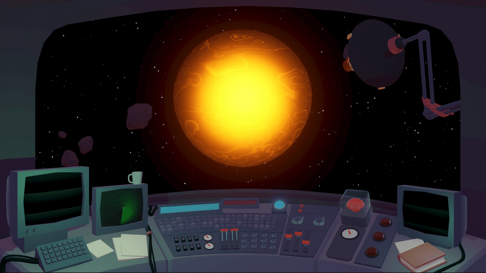

J’ai eu l’incroyable opportunité de participer à la Scientific Game Jam de Montréal 2025, qui se déroulait à l’Indie Asylum (une organisation qui regroupe plusieurs studios indépendants). Nous étions une équipe de cinq, et ensemble nous avons créé The Collapse is Near. Comme pour chaque équipe, notre point de départ était la thèse d’un scientifique, et nous avons eu la chance de travailler avec Emmanuel Calvet, chercheur et développeur qui étudie l’équilibre entre ordre et chaos dans les systèmes complexes. Ses recherches portent sur la manière dont cet équilibre pourrait permettre de concevoir des circuits neuromorphiques plus efficaces, capables de traiter d’immenses réseaux neuronaux tout en consommant beaucoup moins d’énergie que les technologies actuelles. L’idée qu’un système ne peut survivre que s’il évite les extrêmes nous a beaucoup inspirés.
À partir de là, nous avons imaginé un soleil instable, constamment tiraillé entre l’Ordre et le Chaos. Le joueur influence son état en envoyant des messages au clavier : chaque message influence l’état du soleil, qui réagit en se stabilisant ou en s’emballant selon ce qu’on lui envoie. Si l’on tombe dans un extrême, le soleil finit par exploser ou s’effondrer, et la partie se termine. Toute l’expérience repose sur cette tension permanente, sur cette tentative de maintenir un équilibre fragile dans un système qui ne demande qu’à basculer. Le soleil répond visuellement aux messages du joueur, créant une sorte de dialogue étrange et presque méditatif où l’on joue autant avec le système qu’avec sa propre manière d’écrire.
Si vous souhaitez en savoir plus sur le système de calcul derrière le jeu, je vous invite à consulter la page explicative rédigée par notre spécialiste. Il l’explique bien mieux que moi.
La jam durait deux jours et nous avons eu beaucoup de mal à nous lancer au début. Nous ne trouvions pas d’idée de concept qui soit à la fois stimulante à jouer et fidèle aux recherches d’Emmanuel. Nous avons passé la majorité de la première journée à discuter de nos idées. Nous ne nous sommes lancés dans le développement qu’en fin d’après-midi, et la présentation du jeu était à 18 h le lendemain. En considérant cette difficulté, je suis particulièrement fière du jeu que nous avons réussi à produire.
Sur ce projet, je me suis occupée de coder une partie du gameplay. Emmanuel s’est chargé du calcul de l’entropie, et j’ai fait en sorte que ce système interagisse correctement avec le soleil. J’ai également codé quelques effets visuels, comme la petite barre centrale rouge et verte qui doit rester au milieu pour stabiliser le soleil (réalisée avec un shader en HLSL). Trop de vert indiquait un soleil trop agité, trop de rouge un soleil trop calme. J’ai aussi programmé quelques animations pour les boutons de la console du joueur (animations réalisées entièrement en code), et j’ai ajusté le déclenchement du VFX d’ondes, réalisé par un de mes coéquipiers.
À la fin de la jam, nous avons pu présenter notre jeu devant un jury, et une séance de playtest ouverte au public a été organisée une semaine plus tard. Les équipes avaient le droit, si elles le souhaitaient, d’améliorer leurs jeux entre la jam et les playtests. La vidéo de démo disponible plus haut présente la version que nous avons rendue à la fin de la jam. Avec les difficultés rencontrées au début du projet, plusieurs éléments auxquels nous avions réfléchi n’avaient pas pu être intégrés par manque de temps. Par exemple, notre jeu avait une condition de défaite — le soleil explose lorsqu’on n’arrive plus à le stabiliser — mais aucune condition de victoire. Aucun moyen de rendre le soleil stable n’existait. Nous avons donc poursuivi le développement. Nous avons ajouté une condition de victoire (dont je me suis occupée), quelques éléments visuels (comme un graphique montrant l’entropie des clics du joueur en temps réel), des menus explicatifs et une page de crédits pour présenter les personnes qui nous ont accompagnés sur ce projet.
Des builds Windows de toute les versions du jeu sont disponibles sur notre page itch.io.